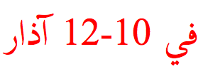
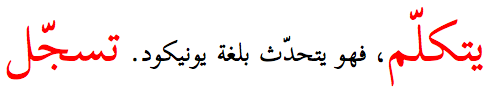
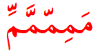
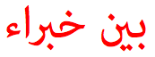
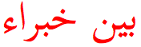
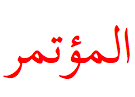
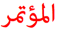
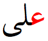
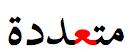
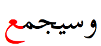

Updated 21 Oct 2014 • tags arabic, scriptnotes
This page provides information about the characteristics of the script used to write Arabic. It is not intended to be exhaustively scientific – merely to give a basic idea of the essential features of the script.
عندما يريد العالم أن يتكلّم ، فهو يتحدّث بلغة يونيكود. تسجّل الآن لحضور المؤتمر الدولي العاشر ليونيكود ()، الذي سيعقد في 10-12 آذار بمدينة مَايِنْتْس، ألمانيا. و سيجمع المؤتمر بين خبراء من كافة قطاعات الصناعة على الشبكة العالمية انترنيت ويونيكود، حيث ستتم، على الصعيدين الدولي والمحلي على حد سواء مناقشة سبل استخدام يونكود في النظم القائمة وفيما يخص التطبيقات الحاسوبية، الخطوط، تصميم النصوص والحوسبة متعددة اللغات.
مَمِمّمَّمِّ
| Script name | Arabic |
|---|---|
| Script type | abjad |
| Number of characters | 350 |
| Case distinction | no |
| Combining characters | 80 (rarely used) |
| Multiple combining characters | yes |
| Context-based positioning | yes |
| Contextual shaping | yes |
| Cursive script | yes |
| Many more glyphs than characters? | yes |
| Text direction | rtl |
| Baseline | mid |
| Space is word separator | yes |
| Wraps at | word |
| Justification | baseline stretch |
| Native digits? | yes |
| Other | glyph height; glyph width variation |
Click on the orange text in the features list (right column) to see examples and notes. Click on highlighted text in the Sample section to see the characters. Click on the vertical blue bar, bottom right, to change font settings.
Arabic is an abjad. This means that in normal use the script represents only consonant and long vowel sounds. This approach is helped by the strong emphasis on consonant patterns in Semitic languages, however the Arabic script is also used for other kinds of language (such as the Indo-European Urdu).
For more information see ScriptSource, Wikipedia or Omniglot.
Arabic script is written horizontally and right-to-left in the main, but as with all RTL scripts, numbers and embedded LTR script text are written left-to-right (producing 'bidirectional' text). In the following example, the Arabic words are read RTL, starting with the one on the right, and numbers are ten and twelve (ie. read left-to-right). The numeric range is also ordered RTL, ie. it starts with 10 and ends with 12:

Diacritics for vowel sounds are typically not used. The shadda (w-like diacritic, that doubles the consonant value) is often not used either. When they are used, however, they need to be placed in different positions, according to the context.
In the highlighted examples you can see that shadda being placed at different heights, depending on the height of the base character that it appears above.

The sample text at the end shows how the vowel signs are placed above and below the shadda, rather than above and below the base character, when a shadda is present.

Diacritics for vowel sounds are typically not used. The shadda (w-like diacritic, that doubles the consonant value) is often not used either. But if they are used together, they have to be displayed together above the same base consonant.
This example is font dependent. In more classical fonts, you will often see the join between certain characters above the baseline, rather than at the baseline. Certain letters in the highlighted sequence may join above the line, like this:

or on the baseline, like this:

Richer fonts will also apply ligatures. Ligatures are also used for justification and styling. The following shows a word using no ligatures, on the left, and ligatures, on the right.
 vs. 
Arabic script joins letters together. The highlights show the same letter, ع , with three different shapes, depending on how it joins:
  
A few Arabic script letters only join on the right-hand side.
Since Arabic is a cursive script, and you need glyphs to join with each other in different ways, there are many more glyphs in a font set than there are characters. Not only that, but Arabic also has ligatures, which themselves join to characters or other ligatures alongside them. One ligature (lam-alif) is mandatory. Otherwise, the use of ligatures varies by font. Compare the two screen captures below, which show the same word - ligatures are used in a couple of places in the example on the right:
vs.
The Arabic justifies text by stretching the baseline and the glyphs of the text, rather than expanding inter-word spaces. Justification can also introduce ligatures in order to squeeze more text onto a line.
This is not supported by many browsers, but if your browser supports it, you can play with justification and vary the extent of the stretching using the controls below.
Set the kashida value (%):
The Arabic script characters in Unicode 7.0 are spread across 3 blocks:
There are two additional blocks for presentation forms, but these characters are only for compatibility with legacy encodings, and should not be used. Sometimes they are used by people to get around problems with Arabic support in applications, but this is a bad idea since it corrupts the underlying data, making it difficult to search, spellcheck, or do many other things that rely on the use of standard characters and their properties.
Many of the characters share a common base form, and are distinguished by the number and location of dots or other small diacritics, called i'jam. For example, س ش ݜ ݰ ݽ ݾ ڛ ښ ڜ ۺ.
The following is an incomplete list of languages and the number of characters they use, per version 26 of CLDR's lists of characters (exemplarCharacters).